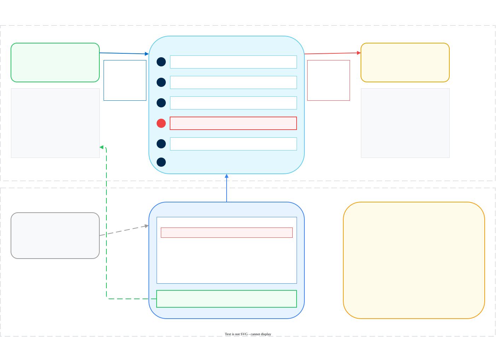
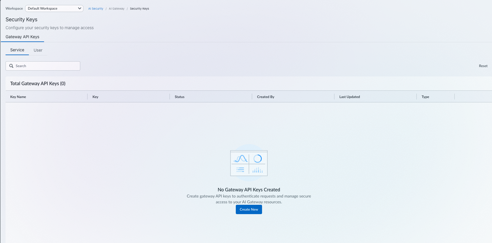
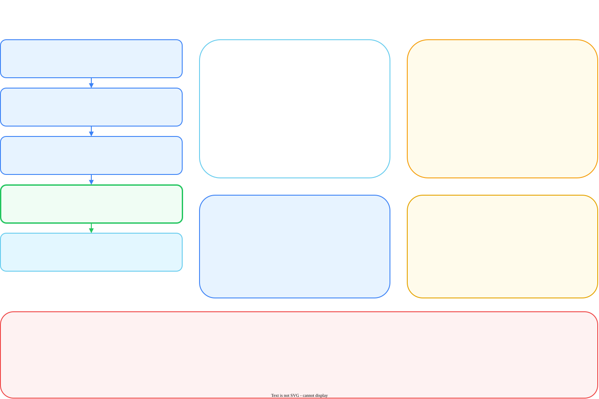

Identity and Client Configuration
The credential an application presents to the gateway, the credential the gateway presents to the model provider, and what each side can see about the people behind a request
What this covers
The five provider guides in this set document one half of the path. They cover how the gateway authenticates to OpenAI, Anthropic, Azure OpenAI, Azure Foundry or Bedrock, and they stop at the point where that credential works. They say nothing about the credential a calling application presents to the gateway, nothing about how several hundred people are told apart once their traffic shares one provider credential, and nothing about what the provider records against any of them.
This page covers the other half and the limits that follow from it. Read it before a design conversation about cost allocation, access revocation or rate limits, because the answer to all three depends on which side of the gateway an identity lives on.
| Question a customer asks | Answered in |
|---|---|
| Which credential does the application hold once it points at the gateway? | Client configuration |
| Can OpenAI tell which of our employees sent a request? | What the provider actually sees |
| How do we bill a model spend back to a team? | What the provider actually sees and Hundreds of users |
| Someone left the company. What do we revoke, and where? | Hundreds of users |
| Three hundred developers sit behind one provider key. Do we hit a rate limit? | Hundreds of users |
| Why does the log show a workspace where a person was expected? | How a user reaches the gateway |
Procedures live elsewhere and are not repeated here. Workspace API keys are configuration chapter 8. JWT validation and the two key types are configuration chapter 2. The per-tool matrix of which clients can be routed is the client applications guide. The provider credential itself is the provider integration guide for that provider.
Two credentials
Every request through the gateway crosses two authentication boundaries, and the two credentials are unrelated to each other. The application never holds the provider credential, and the provider never receives the application's credential.
| Upstream, gateway to provider | Downstream, client to gateway | |
|---|---|---|
| Credential | The integration credential configured in step 2 of the wizard: an API key, an OAuth client secret, a role ARN or a federated identity | A workspace API key, or a JWT from your identity provider |
| Held by | The gateway, encrypted at rest | The calling application |
| Scope | One per integration, shared by every workspace the integration is provisioned to | One workspace |
| Governs | Provider access and provider-side spend | Caller identity, budgets, rate limits, guardrails and logging |
| Configured in | The provider integration guides | Configuration chapter 2 and chapter 8 |

One request crosses both boundaries in this order:
- The application sends the request to the gateway base URL, presenting a workspace API key in the
x-portkey-api-keyheader, or a JWT in that header or inAuthorization: Bearer. - The gateway validates that credential, resolves it to a workspace, and resolves it to an individual user where the credential carries enough to do so.
- The gateway reads the slug from the model reference, or from the
x-portkey-providerheader, and selects the integration it names. - The gateway applies the budget, the rate limit, the model allowlist and the guardrails that belong to that workspace and that integration. Every one of those decisions uses the downstream identity.
- The gateway authenticates to the provider with the integration credential. The caller's credential goes no further.
- The provider authorizes the integration credential, serves the request, and records the call against the principal that credential represents.
- The response returns through the gateway, which writes a log entry carrying the downstream identity, the token counts and the cost.
Step 5 terminates one authentication and originates another. The caller's identity stops at the gateway and the provider's view starts there, so the gateway log entry is the single record that holds the person, the workspace, the integration and the model together. Every per-user figure a customer wants comes out of that log or it does not exist.
What the provider actually sees
A model provider sees one principal per integration, however many people sit behind it. Per-user attribution happens inside the gateway and does not reach the provider. Three separate pieces of the product confirm this rather than imply it.
| Evidence | What it shows |
|---|---|
| The federation mappings | The OpenAI workload identity mapping resolves to a single service account, and the Anthropic federation rule targets a single service account. One service account is the identity the provider authorizes, whoever triggered the call. |
| The Entra agent identity flow | The agent identity guide states that the agent's token never leaves the gateway and that egress to the provider happens on a different credential. Identity resolves through claim precedence inside the gateway and is then dropped. |
| Bedrock STS session tags | The session tag feature exists because AWS cannot otherwise distinguish callers sharing one assumed role. Its documented purpose is attributing cost while sharing a single role, which is a statement that the role alone tells AWS nothing about the caller. |
Three consequences follow, and each one is worth saying to a customer before the integration is built:
- Invoicing — the provider bill carries one line per integration. It cannot be broken down by person, by team or by application on the provider side.
- Chargeback — per-user and per-team cost figures come from gateway data only. Configuration chapter 13 covers where those figures come from and how they are calculated.
- Revocation — removing one person's access happens at the gateway. Deleting the provider credential revokes everybody at once, because everybody is using it.
Nothing stops an engineer pasting a personal OpenAI or Anthropic key into an integration, and the integration works immediately. Three things break when that configuration reaches production.
- The organization's model traffic is bound to one individual's account, and it stops when that person leaves.
- The provider's rate and spend limits for the whole organization become that individual's limits.
- Provider-side cost records attribute the entire organization's usage to one person.
Both providers offer service-account constructs, and those are what the federation mappings target. Use one of those for anything beyond a first smoke test.
STS session tags are the single case in this set where identity from the gateway side reaches the provider side. The tags carry applications, teams and environments rather than people, so they separate a bill between four product teams and they still cannot name an individual. They also need gateway 2.19.0 or higher and the environment variable AWS_BEDROCK_STS_SESSION_TAGS_ENABLED set to true on the gateway container, which makes them self-hosted in practice. The Bedrock guide has the full requirement list and the trust policy both halves need.
The OpenAI API accepts a user field in the request body for abuse monitoring, and it is the one field that could carry a per-caller identifier to a provider. Whether the gateway forwards it unchanged, drops it, or overwrites it with something of its own is undocumented in every source this site holds, and it was not tested.
Put the question to the product team before a design depends on either answer. If the gateway forwards the field, it is the only per-user signal that reaches a provider, and a customer with an abuse-investigation requirement will want to know that.
How a user reaches the gateway
The credential an application presents decides how precisely the gateway can attribute what that application does. Two mechanisms exist, and they differ in granularity rather than in strength.
| Mechanism | Attributes to | Requires |
|---|---|---|
| Workspace API key | The workspace. Every application sharing the key is indistinguishable in the logs. | A workspace and a key issued in it. Configuration chapter 8. |
| JWT with validated claims | The individual user, by the first claim present in the order email_id, then sub, then uid, matched against workspace membership. |
JWKS registered on the organization, directory-provisioned users, and gateway 2.21.0 or higher for email-based attribution. Configuration chapter 2 and the agent identity guide. |
A token that carries only sub reports a subject identifier where a customer expects an address, because the precedence takes the first claim that is present and stops there. Decode a real token before promising per-user reporting.
Chapter 8 issues workspace keys on two tabs. A Service key is tied to nobody and is what applications and automated processes receive. A User key is tied to a named workspace member and attributes to that person in logs and analytics without any token work. A user key is the shortest route to per-person attribution for a small number of named consumers; a JWT is the route that scales to a directory.
The two tabs are where that choice is made:

Both tabs issue a working key and the application code is identical either way, so the choice is invisible once the key is in use. It is not invisible in the logs, and it cannot be changed afterwards: moving a consumer from a Service key to a User key means issuing a new key and redeploying whatever holds it. Decide the tab before issuing the first key for a workspace.
Chapter 2 records two key types for the organization, and the distinction between them matters more than it first appears.
| Key type | Scope | Issued to |
|---|---|---|
| Admin API key | The whole organization, reaching across every workspace | Administrative automation only |
| Workspace API key | One workspace | Applications and services. This is what application teams receive. |
An admin key carries organization-wide scope including user management, guardrail changes and key rotation, and it can target any workspace by naming it. An application that only calls a model needs a workspace key. An admin key in an application configuration file is an organization-wide credential sitting in a deployment pipeline.
Client configuration
An application connects to the gateway when three values change. The request body does not change, the response body does not change, and no agent gets installed. Section 1 of the model provider prerequisites is the source of this table.
| Value | Set it to | Why |
|---|---|---|
| Base URL | The gateway address | The request goes to the gateway rather than to the provider. |
| API key | The workspace API key | The gateway authenticates the application. The application holds no provider key. |
| Model reference | @<slug>/<model-name> | The slug names the integration the gateway should use. |
| Provider header | x-portkey-provider: @<slug> | Only for clients that send a bare model name and cannot put the slug in the model field. Claude Code is one. |
The client applications guide lists which tools need the fourth value, and which three products cannot be routed at all.
The OpenAI SDK wants the base URL with /v1 on the end. The Anthropic SDK wants it without, because the SDK appends its own path. Getting this wrong produces a doubled path and an HTTP 404 from the gateway, which reads like an outage and is a one-character configuration error.
The OpenAI SDK, with the slug in the model field:
from openai import OpenAI
client = OpenAI(
base_url="<gateway-base-url>/v1", # with /v1
api_key="<workspace-api-key>",
)
response = client.chat.completions.create(
model="@openai-prod/gpt-4.1",
messages=[{"role": "user", "content": "Reply with the single word ready."}],
)
print(response.choices[0].message.content)The Anthropic SDK, same three values and a different base URL:
from anthropic import Anthropic
client = Anthropic(
base_url="<gateway-base-url>", # no /v1
api_key="<workspace-api-key>",
)
message = client.messages.create(
model="@anthropic-prod/claude-sonnet-4-20250514",
max_tokens=64,
messages=[{"role": "user", "content": "Reply with the single word ready."}],
)
print(message.content[0].text)Neither example sends a provider key, and neither one needs the provider header, because the model reference carries the slug. A client that cannot send a prefixed model name sends the header instead, as the Claude Code section shows.

Hundreds of users
A customer with three hundred developers asks three questions in a row: who holds the keys, what happens when someone leaves, and whether one provider credential survives that volume. The first two are gateway questions. The third is a provider question that the gateway cannot answer on the customer's behalf.
Key issuance and leavers
Workspace keys are issued per workspace by whoever administers that workspace, following chapter 8. A Service key belongs to nobody, so the departure of the engineer who created it changes nothing about the key and it keeps working until somebody rotates it. Chapter 2 asks for a key inventory recording the interval and the holder of every key for exactly this reason: rotation needs a known blast radius, and a leaver is the moment that inventory earns its cost. Per-user access through JWT behaves differently, because the identity provider stops issuing tokens for a deprovisioned user and the gateway has nothing to revoke.
The provider-side quota
Every workspace provisioned to an integration shares that integration's single provider credential, so every one of them shares whatever rate limit the provider applies to that credential. Gateway rate limits divide that ceiling between workspaces, and they cannot raise it. Routing an entire organization through one credential concentrates all of its traffic into one provider-side bucket, and when that bucket is exhausted the provider throttles the traffic independently of whether any gateway limit was reached.
The mechanism above is sourced. Three things about it are not, and none of them should be stated to a customer as fact.
- Tier numbers — the specific request and token limits each provider applies at each tier were not checked against any provider account. Read them from the customer's own provider console.
- The error surfaced — what the gateway returns to the caller when the provider throttles, rather than when a gateway limit is reached, was not observed.
- Retry behavior — whether the gateway retries a provider throttle or passes it straight through was not tested. Retries and fallbacks are configurable per configuration chapter 12, so the answer most likely depends on the config object attached to the request, and that was not confirmed either.
Separate integrations where the quota matters
One integration per environment, or one per business unit, gives each of them its own provider credential and therefore its own provider-side bucket. That split also matches the slug convention chapter 9 recommends, where the slug names the provider and the environment in lowercase with hyphens, as in openai-prod and bedrock-prod. The slug ends up in application code, so deciding the split before the first integration is created costs nothing and changing it afterwards means a code change in every caller.
Where one key genuinely has to serve several logical callers, request metadata splits them in the gateway's own reporting. An application sends x-portkey-metadata with keys such as application, team and environment, and chapter 13 filters and groups on them. Agree the key names before any application sends them, because three teams sending three spellings of the same concept produce three dimensions that do not add up.
Troubleshooting
Five confusions follow predictably from the two-credential model. Each one looks like a gateway fault and each one is a client configuration error or a misread log.
An application team that already held an OpenAI or Anthropic key frequently keeps it in place and changes only the base URL. The gateway authenticates the credential it receives against its own keys, so a provider key is an unknown credential and the request stops before any integration is reached.
- Read the gateway log for the failing request. Authentication rejected at the gateway, with no integration and no model named, points at the credential rather than at the integration.
- Check what the application actually sends. A value beginning with a provider's own key prefix is the provider key.
- Replace it with a workspace API key from chapter 8.
- Remove the provider key from the application configuration and from the secret store that fed it, so the application cannot reach the provider directly any more.
The same request returns a completion, and the gateway log entry names the integration and the model with a token count against it. Confirm the old provider key is gone by checking that the application fails if it is pointed back at the provider address.
The gateway needs to know which integration to use. The slug normally arrives inside the model reference, so a client that sends a bare model name has given the gateway nothing to route on and the gateway answers 400 naming the headers it will accept instead.
- Check whether the client can send a prefixed model name. If it can, set the model to
@<slug>/<model-name>and stop here. - If it cannot, add the header
x-portkey-provider: @<slug>to every request the client sends. - For Claude Code, set that header through
ANTHROPIC_CUSTOM_HEADERSas the client applications guide describes.
The request returns a completion, and the gateway log shows it against the integration the slug names. A second 400 mentioning x-portkey-config or x-portkey-provider means the header is not reaching the gateway, so check the client is sending custom headers at all.
A 404 from the gateway on an otherwise correct configuration is almost always a doubled or a missing path segment. The two SDKs expect opposite base URLs, so a team that copied a working OpenAI configuration into an Anthropic client inherits the wrong one.
| Client | Base URL ends with | Because |
|---|---|---|
| OpenAI SDK, Cursor, Codex CLI | /v1 | The client sends the path after /v1 and expects the base to include it. |
| Anthropic SDK, Claude Code | No /v1 | The client appends its own /v1/messages path. |
Raw curl | Whatever the full URL needs | Nothing is appended, so the request line carries the complete path. |
The request returns a completion rather than a 404, and the request appears in the gateway log. A request that produces no log entry at all never reached the gateway, which makes it a network or an address problem rather than a path problem.
This is the attribution model working as designed rather than a logging fault. A Service workspace key is tied to nobody, so every request made with it attributes to the workspace and the applications sharing that key cannot be told apart.
| What the log shows | What the caller is holding |
|---|---|
| A workspace and no user | A Service workspace key. |
| A named workspace member | A User workspace key, or a JWT whose email_id matched a member. |
| A subject identifier instead of an address | A JWT carrying sub but no email_id. The precedence took the first claim present. |
| Whatever the application chose | Any credential plus x-portkey-metadata carrying a caller value. |
Choose the credential that produces the attribution the customer asked for, and change the client to send it. No logging setting recovers an identity the request never carried.
After the client changes credential, a new request logs the identity the customer expects. Older entries keep the old attribution, because the log records what each request carried at the time.
Two different ceilings can stop the same request. The gateway rate limit belongs to the workspace and is visible in the console. The provider rate limit belongs to the integration credential, applies to every workspace behind it at once, and is invisible from the gateway.
- Read the workspace rate limit configured in chapter 9 and compare it against the request rate at the time of the failure.
- If the workspace was below its configured limit, the ceiling that was reached is not the gateway's.
- Check whether other workspaces provisioned to the same integration were busy in the same window. They share the credential and therefore the provider bucket.
- Confirm the quota in the customer's provider console, which is the only place the provider-side number is visible.
- Where the concentration is the problem, split the traffic across separate integrations as described in Hundreds of users.
The exact error the gateway surfaces for a provider throttle was not observed, and whether the gateway retries it or passes it through was not tested. Do not match on an error string taken from this page, because this page does not print one.
The failing window correlates with either the workspace rate limit or the combined traffic of every workspace on the integration, and you can say which. A failure that correlates with neither is a different fault and belongs in the provider guide's troubleshooting section.
Not yet verified in a tenant
The two-credential model itself is sourced from the product documentation, the published configuration chapters and tenant screenshots. These specific behaviors were not observed, and each one is flagged where it appears above.
- The OpenAI
userparameter — whether the gateway forwards, drops or overwrites it is undocumented. It is the only field that could carry a per-caller identifier to a provider. - Provider tier numbers — no provider's rate or token limits were read from a provider account. Take them from the customer's console.
- The provider throttle error — what the gateway returns to a caller when the provider throttles, as distinct from when a gateway limit is reached.
- Retry behavior on a provider throttle — whether the gateway retries or passes it through. Retries and fallbacks are configurable per chapter 12, so the answer probably depends on the config object, and that was not confirmed.
- Leaver handling for a User workspace key — whether removing a member from a workspace invalidates a User key issued to them, or leaves it working until it is deleted.
Open items about the integration forms themselves are listed on the provider integrations hub.